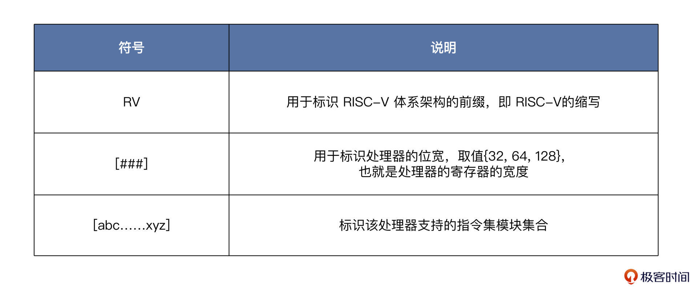

- 00 开篇词 练好基本功，优秀工程师成长第一步.md
- 01 CISC & RISC：从何而来，何至于此.md
- 02 RISC特性与发展：RISC-V凭什么成为“半导体行业的Linux”？.md
- 03 硬件语言筑基（一）：从硬件语言开启手写CPU之旅.md
- 04 硬件语言筑基（二）_ 代码是怎么生成具体电路的？.md
- 05 指令架构：RISC-V在CPU设计上到底有哪些优势？.md
- 06 手写CPU（一）：迷你CPU架构设计与取指令实现.md
- 07 手写CPU（二）：如何实现指令译码模块？.md
- 08 手写CPU（三）：如何实现指令执行模块？.md
- 09 手写CPU（四）：如何实现CPU流水线的访存阶段？.md
- 10 手写CPU（五）：CPU流水线的写回模块如何实现？.md
- 11 手写CPU（六）：如何让我们的CPU跑起来？.md
- 12 QEMU：支持RISC-V的QEMU如何构建？.md
- 13 小试牛刀：跑通RISC-V平台的Hello World程序.md
- 14 走进C语言：高级语言怎样抽象执行逻辑？.md
- 15 C与汇编：揭秘C语言编译器的“搬砖”日常.md
- 16 RISC-V指令精讲（一）：算术指令实现与调试.md
- 17 RISC-V指令精讲（二）：算术指令实现与调试.md
- 18 RISC-V指令精讲（三）：跳转指令实现与调试.md
- 19 RISC-V指令精讲（四）：跳转指令实现与调试.md
- 20 RISC-V指令精讲（五）：原子指令实现与调试.md
- 21 RISC-V指令精讲（六）：加载指令实现与调试.md
- 22 RISC-V指令精讲（七）：访存指令实现与调试.md
- 23 内存地址空间：程序中地址的三种产生方式.md
- 24 虚实结合：虚拟内存和物理内存.md
- 25 堆&栈：堆与栈的区别和应用.md
- 26 延迟分配：提高内存利用率的三种机制.md
- 27 应用内存管理：Linux的应用与内存管理.md
- 28 进程调度：应用为什么能并行执行？.md
- 29 应用间通信（一）：详解Linux进程IPC.md
- 30 应用间通信（二）：详解Linux进程IPC.md
- 31 外设通信：IO Cache与IO调度.md
- 32 IO管理：Linux如何管理多个外设？.md
- 33 lotop与lostat命令：聊聊命令背后的故事与工作原理.md
- 34 文件仓库：初识文件与文件系统.md
- 35 Linux文件系统（一）：Linux如何存放文件？.md
- 36 Linux文件系统（二）：Linux如何存放文件？.md
- 37 浏览器原理（一）：浏览器为什么要用多进程模型？.md
- 38 浏览器原理（二）：浏览器进程通信与网络渲染详解.md
- 39 源码解读：V8 执行 JS 代码的全过程.md
- 40 内功心法（一）：内核和后端通用的设计思想有哪些？.md
- 41 内功心法（二）：内核和后端通用的设计思想有哪些？.md
- 42 性能调优：性能调优工具eBPF和调优方法.md
- 先睹为快：迷你CPU项目效果演示.md
- 加餐01 云计算基础：自己动手搭建一款IAAS虚拟化平台.md
- 加餐02 学习攻略（一）：大数据&云计算，究竟怎么学？.md
- 加餐03 学习攻略（二）：大数据&云计算，究竟怎么学？.md
- 加餐04 谈谈容器云与和CaaS平台.md
- 加餐05 分布式微服务与智能SaaS.md
- 国庆策划01 知识挑战赛：检验一下学习成果吧！.md
- 国庆策划02 来自课代表的学习锦囊.md
- 国庆策划03 揭秘代码优化操作和栈保护机制.md
- 温故知新 思考题参考答案（一）.md
- 用户故事 我是怎样学习Verilog的？.md
- 结束语 心若有所向往，何惧道阻且长.md
02 RISC特性与发展：RISC-V凭什么成为“半导体行业的Linux”？
你好，我是LMOS。
上节课，我带你见证了两种计算机指令集的设计结构——CISC与RISC。而今天我们的“主角”就是RISC中的一个代表性特例，它就是RISC-V。
作为未来芯片指令集的主流，RISC-V是今后芯片设计的最佳方案，甚至可以说它就是硬件行业里的Linux。
为什么这么说呢？这节课，我会从RISC-V发展历史、原理与技术特性几个方面入手，带你弄明白为什么RISC-V在半导体行业中发展得如此迅猛。
RISC-V从何而来
让我们“穿越时空”，把时间线拉回到2010年。在加州伯克利分校的校园中，Krste Asanovic教授正为了学生们学习计算机架构而发愁。由于现存芯片指令集冗余且专利许可费用昂贵，还有很多IP法律问题，没有一款合适的CPU用于学习。
于是他想要带领一个研究团队，来设计一款用于学生学习的CPU。研究团队在选择架构的时候，对比了传统已经存在的ARM、MIPS、SPARC以及x86架构等，发现这些架构指令集要么极其复杂，要么极其昂贵。所以，他们的研究团队最终决定设计一套全新的指令集。
这个研究团队最开始只有4个人，却在三个月之内完成了指令集原型开发，其能力可见一斑。后来，这个项目被计算机体系结构方面的泰斗 David Patterson 发现，并且得到了他的大力支持。
早在1981年，伯克利分校已经设计出了第一代RISC指令集，之后又陆续设计了四代RISC指令集的架构。有了这些设计经验，在设计RISC-V指令集架构时，研究团队就变得驾轻就熟。
用RISC-V来命名该指令集架构，有两层意思：RISC-V中的“V”，一方面代表第5代RISC；另一方面，“V”取“ Variation”之意，代表变化。
虽然RISC-V在2010年才开始研发，但在第二年（2011年）就进行了首次流片，流片就是按照芯片设计生产出可以工作的芯片成品。从这以后，基于RISC-V的CPU设计，或者在SOC中集成RISC-V架构，各种软件工具链的开发和各种基于RISC-V架构的操作系统移植，在不断涌现。这给CPU整个行业带来了不小轰动，当然，这也离不开泰斗 David Patterson 的号召作用。
一个产品的成功，技术当然是非常重要的原因，但也需要非常给力的运营。在2015年，由最初的25个成员一起成立了非盈利性组织RISC-V基金会（RISC-V Foundation）。
之后，有多达300个单位加入RISC-V基金会，其中包括阿里、谷歌、华为、英伟达、高通、麻省理工学院、普林斯顿大学、印度理工学院、中科院计算所、联发科等。这些学术机构、芯片开发公司、设计服务与系统厂商的加入，为RISC-V的发展建立了良好的生态环境。
RISC-V是什么
通过上节课，我们知道了RISC就是指精简指令集计算机体系结构。而前面也说了，RISC-V是伯克利分校设计出的第五代RISC指令集架构。但既然迅速走红的是RISC-V，相比其他的RISC，它必然有过人之处，这样才能立足于市场，不然很可能只沦为学生们的学习工具。
如果只是对RISC-V下一个定义，会相当简单：RISC-V是一套开放许可证书、免费的、由基金会维护的、一个整数运算指令集外加多个扩展指令集的CPU架构规范。
任何硬件开发商或者相关组织都可以免费使用这套规范，构建CPU芯片产品。如果我们的目的只是想对RISC-V有个概念了解，前面这些信息就足够了。不过想知道RISC-V为什么流行这个秘密，显然我们还需要更详细的信息，才能深入了解。
指令集命名方式
现在假定我们是一家芯片公司的芯片工程师，公司有了新的业务，对CPU提出了更高的要求，让我们基于RISCV指令集架构实现一款全新的CPU。根据我们公司的业务场景，我们只需要选择RISC-V架构中的一部分指令，CPU的位宽也有特定的要求。
因此，现在需要一些命名方式，来对我们选择的RISCV架构进行命名。这样，用户在阅读该CPU文档时，马上就能了解这款CPU是多少位的、有哪些指令集，它们具体有什么功能。
其实这个命名方式在RISC-V规范中有相关定义说明，以RV为前缀，然后是位宽，最后是代表指令集的字母集合，具体形式如下：
RV[###][abc……xyz]
我用表格为你说明一下这个格式，如下所示：
举个例子，比如：RV64IMAC，就表示64位的RISC-V，支持整数指令、乘除法指令、原子指令和压缩指令。
指令集模块
接着我们一起来看看指令集模块。指令集是一款CPU架构的主要组成部分，是CPU和上层软件交互的核心，也是CPU主要功能的体现。
但RISC-V规范只定义了CPU需要包含基础整形操作指令，如整型的储存、加载、加减、逻辑、移位、分支等。其它的指令称为可选指令或者用户扩展指令，比如乘、除、取模、单精度浮点、双精度浮点、压缩、原子指令等，这些都是扩展指令。扩展指令需要芯片工程师结合功能需求自定义。
所以RISC-V采用的是模块化的指令集，易于扩展、组装。它适应于不同的应用场景，可以降低CPU的实现成本。
我给你列了一张图，图里展示的是RISC-V 指令集的各个组成部分。

RISC-V的基本指令集和扩展指令集你有个大致印象就可以，更详细的技术讲解，后面第五节课我再展开。下面我们去看看RISC-V的寄存器。
RISC-V寄存器
指令的操作数是来源于寄存器，精简指令集架构的CPU，都会提供大量的寄存器，RISC-V当然也不例外。RISC-V 的规范定义了32个通用寄存器以及一个 PC寄存器，这对于RV32I、RV64I、RV128I指令集都是一样的，只是寄存器位宽不一样。
如果实现支持 F/D 扩展指令集的CPU，则需要额外支持 32个浮点寄存器。而如果实现只支持RV32E指令集的嵌入式CPU，则可以将32个通用寄存器缩减为16个通用寄存器。 
为了帮助你聚焦要点，不常用的32个浮点寄存器并没有列在这张表里。表中的ABI名称，即应用程序二进制接口，你可以理解为寄存器别名，高级语言在生成汇编语言的时候会用到它们。
比如C语言处理函数调用时，用哪些寄存器传递参数、返回值，调用者应该保护哪些寄存器，用什么寄存器管理栈帧等等。
定义好ABI标准，我们就能在语言间互相调用函数了。比如C语言函数调用汇编语言函数，这里我先卖个关子，后面语言与指令的篇章再给你详细展开。
RISC-V特权级
研究完了RISC-V寄存器，我们再来看看RISC-V的特权级。不同的特权级能访问的系统资源不同，高特权级能访问低特权级的资源，反之则不行。RISC-V 的规范文档定义了四个特权级别（privilege level），特权等级由高到低排列，如下表所示。
一个RISC-V硬件线程（hart），相当于一个CPU内的独立的可执行核心，在任一时刻，只能运行在某一个特权级上，这个特权级由CSR（控制和状态寄存器）指定和配置。
具体分级如下：
- 机器特权级（M）：RISC-V中hart可以执行的最高权限模式。在M模式下运行的hart，对内存、I/O和一些必要的底层功能（启动和系统配置）有着完全的控制权。因此，它是唯一一个所有标准RISC-V CPU都必须实现的权限级。实际上，普通的RISC-V微控制器仅支持机器特权级。
- 虚拟机监视特权级（H）：为了支持虚拟机监视器而定义的特权级。
- 管理员特权级（S）：主要用于支持现代操作系统，如Linux、FreeBSD和Windows。
- 用户应用特权级（U）：用于运行应用程序，同样也适用于嵌入式系统。
好了，关于RISC-V的特权级，你了解这些，在现阶段已经足够了。需要把握的重点是，特权级起到了怎样的作用。
有了特权级的存在，就给指令加上了权力，从而去控制用指令编写的程序。应用程序只能干应用程序该干的事情，不能越权操作。操作系统则拥有更高的权力，能对系统的资源进行管理。
RISC-V因何流行
RISC-V指令集架构在2010年才开发出来，到今天不过10多年的时间。这个时间从CPU行业的发展看，是非常短的，也可以说是非常年轻的。相比x86的40多岁的年纪，还有ARM、MIPS、SPARC的30多的年纪，RISC-V简直是个孩子。
要知道ARM、MIPS、SPARC都是RISC系的，MIPS和SPARC甚至已经进入了死亡阶段。按道理讲，RISC-V不应该在这么短的时间内流行起来，成为芯片行业一颗耀眼的新星。
那么RISC-V流行起来，肯定有其优势：一是RISC-V完全开放，二是RISC-V指令简单，三是RISC-V实行模块化设计，易于扩展。
我们先来看看为什么说RISC-V是开放的。之前硬件和软件一样，都是小心地保护自己的“源代码”，因为那是自己的命脉。
直到后来，软件界出现了开源的Linux，一经开源就迅速席卷了全球。在今天的互联网、云计算、手机等领域Linux已经无处不在。但是硬件依然保护着自己的“源代码”，Intel和AMD还是以售卖x86芯片为主，而ARM直接售卖ARM CPU的“源代码”，连生产芯片的步骤都省了。
这种模式下，无论厂商还是个人，要获得CPU都要付出昂贵的代价。这时RISC-V应运而生，它完全毫无保留地开放了CPU设计标准，任何人都可以使用该标准，自由地设计生产CPU，不需要支付任何费用，也没有任何法律问题。这相当于硬件界的“Linux”，推动了开放硬件的运动和发展。
然后，我们来看看为什么说RISC-V很简单？RISC-V提供了一个非常强大且开放的精简指令集架构，只有32个通用寄存器、40多条常用指令、4个特权级。如果需要其它功能，则要进行指令集的扩展，单核心的规范文档才不到300页，一个人在一周之内就能搞清楚。
相比ARM、x86动不动就有8000多页的规范文档，这实在是太简单了。其实，简单也意味着可靠和高效，同时可以让学生或者硬件开发者迅速入手，降低学习和开发成本。
最后，我们来说说RISC-V的模块化设计。RISC-V虽然简单，但这并不意味着功能的缺失。通过模块化的设计，就能实现对各种功能组件的剪裁和扩展。
事实上，现代IT架构已经发生了巨大的改变。举几个我们身边的例子吧。你正在使用的网卡，上面越来越多的网络处理任务和功能，都从主处理器上移到了网卡中，由网卡芯片自己来处理了。
数据处理器 (DPU) 也体现了这一点。由于通用处理器对大规模数据处理能力的限制，所以我们需要专用的数据处理器。而人工智能领域，现在也已经开始通过GPU运行相关算法。
这些例子都在告诉我们，专用处理器芯片的需求在大量激增，而这正是RISC-V的用武之地。RISC-V的标准开放，指令功能模块可以自由组合，所以用RISC-V就能定制一款满足特殊用途的处理器。芯片工程师会自由组合RISC-V现有的指令功能模块，按需对齐进行修改优化，或者实现一个新的指令功能模块，就像你根据需要修改和使用Linux内核一样。
正是因为RISC-V开放、简单和模块化这三大特点，硬件工程师和软件工程师才能站在巨人的肩膀上开发，自由地调用和组装功能模块，快速去实现特定业务场景下的芯片需求。因此，才有了RISC-V引爆芯片行业，迅速火热起来的现象，这是推动开放硬件的革命性壮举。
重点回顾
今天的课程又到了尾声，我们还是来看一下，在这节课中，我们都学习了什么。
首先，我们了解了RISC-V从何而来，明白了RISC-V发源于加州伯克利分校，是该校第五代RISC指令集，即第五代精简指令集。起初是为了学生有一套用来学习研究的指令集。后来因为有技术泰斗David Patterson的加入，又成立RISC-V基金会，RISC-V慢慢流行了起来。
之后我们研究了RISC-V是什么，我带你了解了RISC-V指令集的命名方式、组成模块、寄存器与特权级。这些部分共同组成了RISC-V指令集架构规范。任何硬件厂商都可以按照这个规范，实现自己的RISC-V处理器。
最后，我们讨论了RISC-V因何流行。RISC-V是开放的，没有任何法律和许可证问题，又极其简单，指令集是模块化的，易于剪裁和扩展。这种开放、简单、易于扩展的特点，使得硬件工程师非常容易上手和定制满足特定功能需要的处理器，这直接推动了开放硬件的革命。
课程里的重点内容，我整理成了导图，供你参考。

思考题
为什么RISC-V要定义特权级？
欢迎你在留言区跟我交流互动，如果觉得内容还不错，也推荐你把这节课分享给更多朋友。下节课我们就进入手写miniCPU的部分，敬请期待！
© 2019 - 2023 Liangliang Lee. Powered by Vert.x and hexo-theme-book.